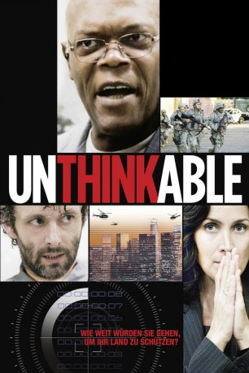

gesehen am 29.05.2015
gesehen am 29.05.2015Alternativ: Unthinkable gesehen am 29.05.2015
 
 IMDB-Wertung: 7.1 / 10
IMDB-Wertung: 7.1 / 10  Metascore:
Metascore: 
Als ein Terrorist die Standorte von drei nuklearen Sprengköpfen herausfindet, ist die nationale Sicherheit der USA gefährdet. Nur zwei Tage bleiben den Behörden, um sie vor ihrer Detonation zu entschärfen. Wie weit ist ein Agent bereit zu gehen, um die Bedrohung unschädlich zu machen?
Jahr: 2010
Dauer: 97 Minuten
FSK: 18
Land: USA Studio: Sony Pictures Home EntertainmentTonspuren: DTS - ,
Untertitel: Deutsch,
Auflösung: 1080p (1920x1038) Größe: 11776 MB
Regisseur: Gregor Jordan
Drehbuch: Peter Woodward
Soundtrack: Graeme Revell
Darsteller:
 Samuel L. Jackson als Henry Harold 'H' Humphries
Samuel L. Jackson als Henry Harold 'H' Humphries Carrie-Anne Moss als Agent Helen Brody
Carrie-Anne Moss als Agent Helen Brody Michael Sheen als Steven Arthur Younger
Michael Sheen als Steven Arthur Younger Stephen Root als Charles Thompson
Stephen Root als Charles Thompson Martin Donovan als Assistant Director Jack Saunders
Martin Donovan als Assistant Director Jack Saunders Gil Bellows als Agent Vincent
Gil Bellows als Agent Vincent Vincent Laresca als Agent Leandro
Vincent Laresca als Agent Leandro Brandon Routh als Agent D.J. Jackson
Brandon Routh als Agent D.J. Jackson Joshua Harto als Agent Phillips
Joshua Harto als Agent Phillips Holmes Osborne als General Paulson
Holmes Osborne als General Paulson Michael Rose als Colonel Kerkmejian
Michael Rose als Colonel Kerkmejian Randy Oglesby als Mr. Bradley
Randy Oglesby als Mr. Bradley Benito Martinez als Alvarez
Benito Martinez als Alvarez Sasha Roiz als Interrogator Lubitchich
Sasha Roiz als Interrogator Lubitchich Yara Shahidi als Katie Humphries
Yara Shahidi als Katie Humphries Geoff Meed als Young Sergeant
Geoff Meed als Young Sergeant Kirk B.R. Woller als Observer
Kirk B.R. Woller als Observer Austin Nichols als Bomb Disposal Expert
Austin Nichols als Bomb Disposal ExpertDatei: X:\FSK18-2010\Unthinkable - Der Preis der Wahrheit (2010, FSK18, 1920x1038).mkv seit 22.05.2015
Festplatte: FSK18
 Es gibt insgesamt 35 Filme in der Gruppe 'FSK18-2010'
Es gibt insgesamt 35 Filme in der Gruppe 'FSK18-2010'